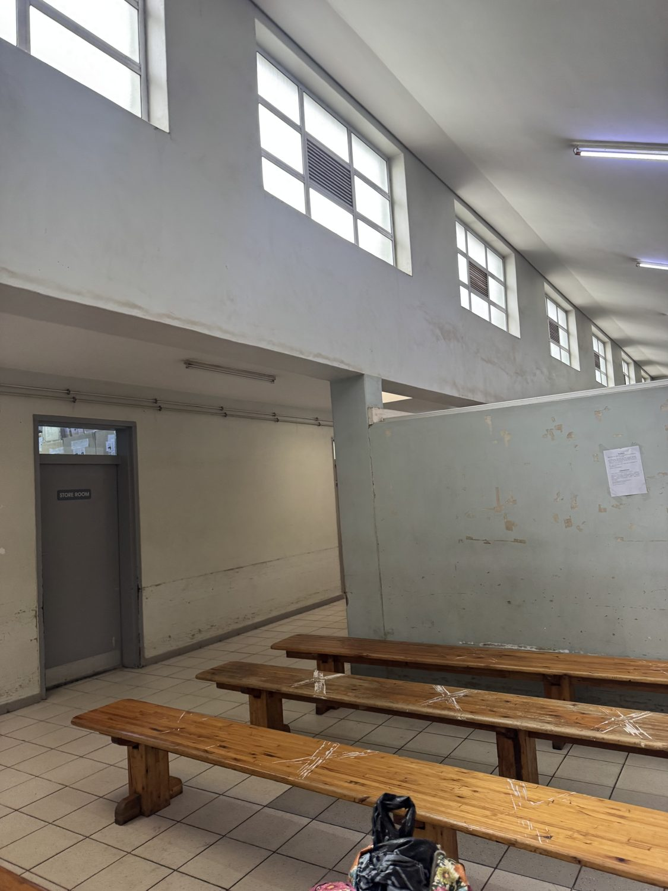
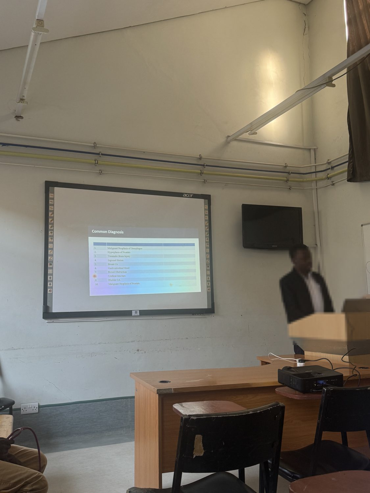
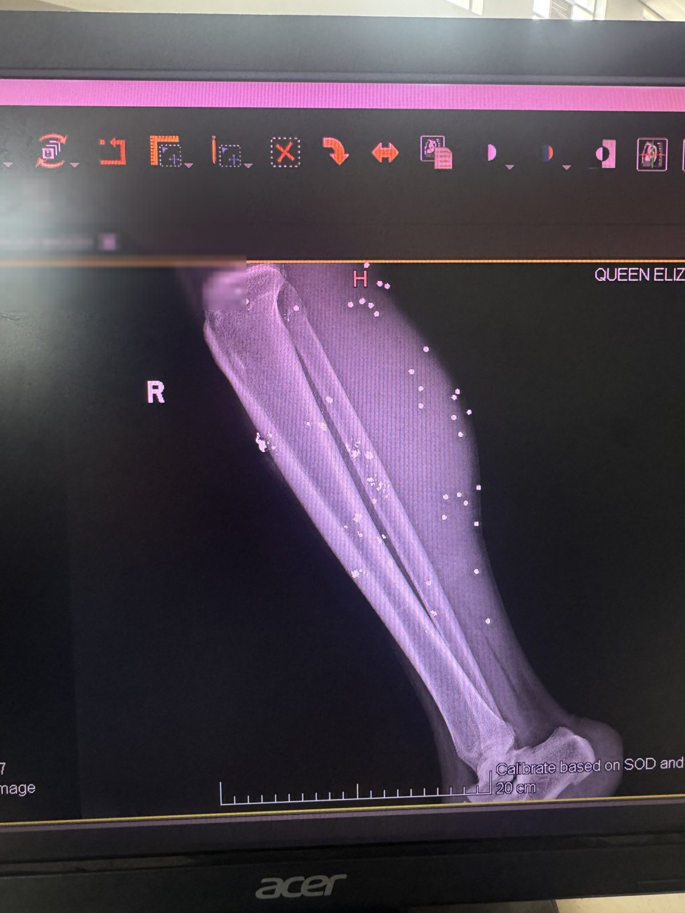
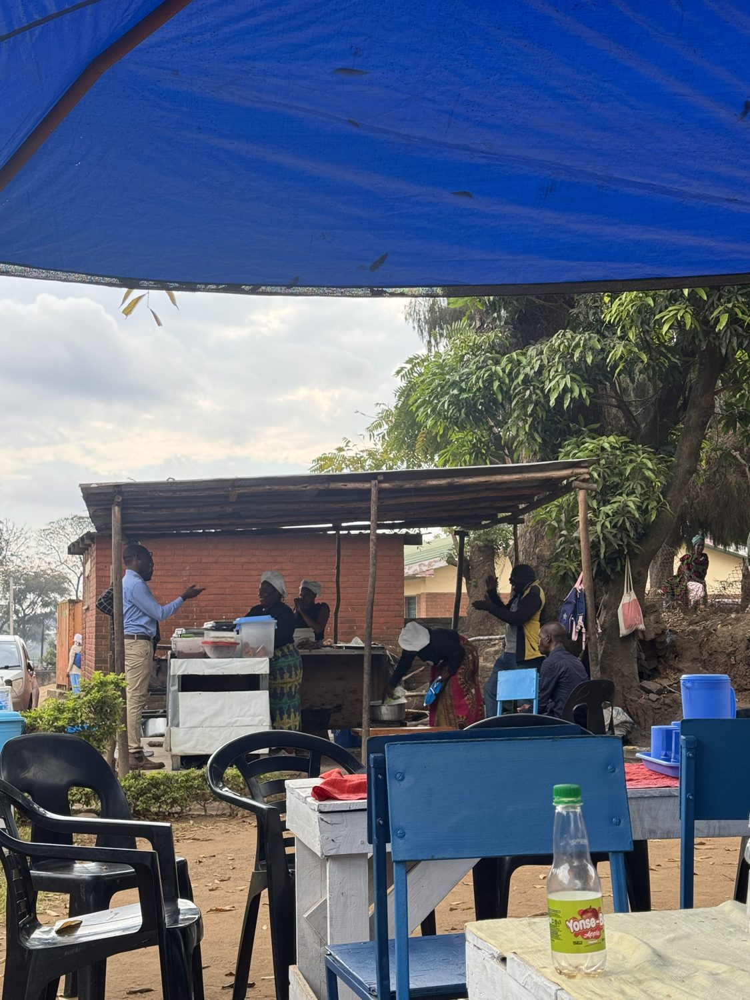

What I experienced during my weeks in the emergency department – and what won't let go of me.
Pictures on site
A few impressions from the hospital.
Please note: I deliberately don't show the resuscitation area itself here. It is almost always full of patients, whom I do not want to photograph out of respect.
The hospital's corridors are usually filled with many patients and their relatives. The entire hospital is on ground level. Windows and floors are kept clean regularly.This is the trauma room, where stable patients are treated after accidents.This is what a cubicle looks like – here in the emergency department patients who need IV drips and the like are treated.A treatment bay with IV stands.

This is one of the waiting areas. Depending on how patients are triaged, they and their relatives often spend hours here. Normally these areas are always very full.

Every morning there is a handover meeting, which also includes teaching for junior doctors. Several times a week there are training lectures.

In the emergency department there is the computer where X-ray and CT images can be viewed. Doctors from other wards also come here to look at their patients' imaging. Due to a lack of storage capacity, images older than a year usually can no longer be found. This image shows a shotgun wound.

A small kitchen outside the hospital – local food for staff and relatives. At lunchtime there is usually nsima or rice with vegetables, egg and/or meat.
Help now
Become part of this story.
Together we make sure the people in the emergency department get the care that decides between life and death.